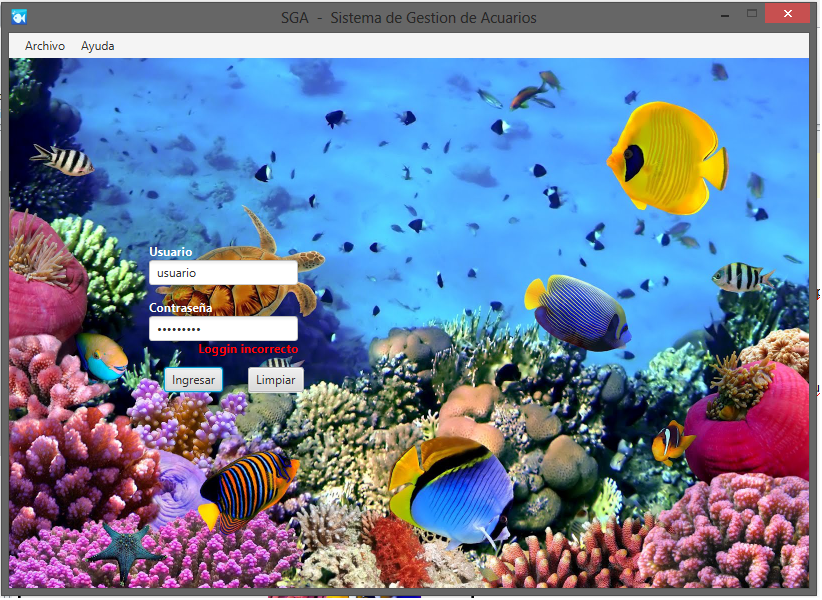

Al ingresar al sistema, encontrará una pantalla como la siguiente:
La misma no difiere demasiado de cualquier loggin que haya utilizado en otros sistemas.
Deberá introducir su nombre de usuario y contraseña (Provistos por alguno de los administradores del sistema previamente)(*), en los campos correspondientes y luego presionar ACEPTAR, para poder ingresar.
Si ha ingresado datos erróneos y desea limpiar los campos antes de poder ingresar, puede clickear sobre LIMPIAR.
Los menús de ARCHIVO y AYUDA se encuentran temporalmente deshabilitados, hasta que no ingrese al sistema.
(*) IMPORTANTE: Previo primer uso del sistema, debe ser notificado de su nombre de usuario y contraseña por parte de alguno de los usuarios administradores, de cualquier otro modo el ingreso será denegado. Lo mismo ocurre si ingresa datos incorrectos, como se muestra en la siguiente pantalla:

Hasta que los datos ingresados no sean correctos, el sistema no le permitirá ingresar a la pantalla principal.
Created with the Personal Edition of HelpNDoc: Easily create CHM Help documents